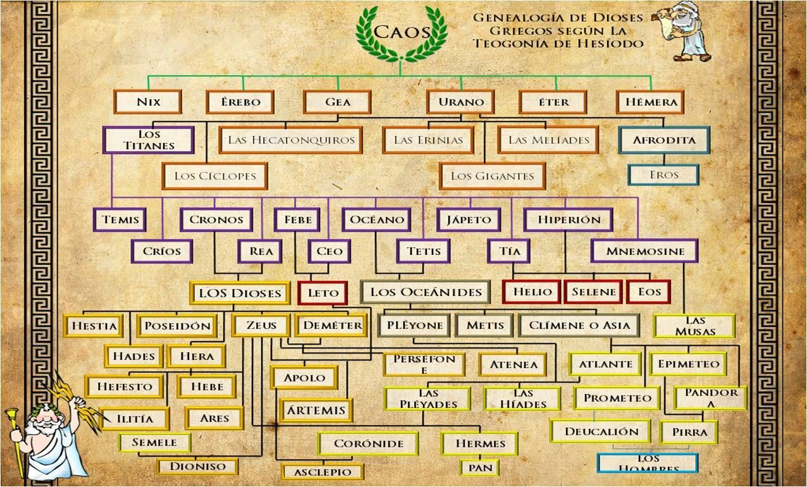
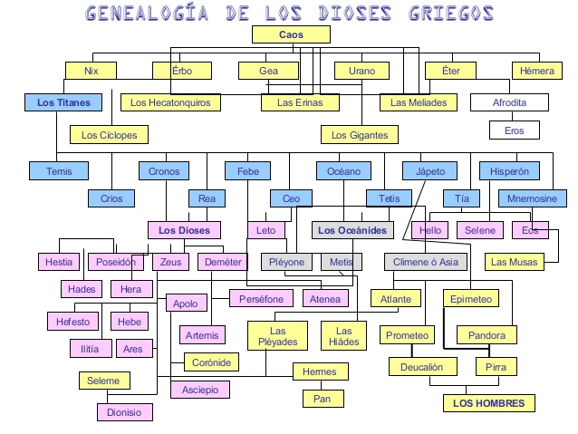

GENEALOGIAS



MAS PERSONAJES GRIEGOS
AFRODITA
La única gran diosa que queda por
abordar es Afrodita, que preside la atrac�ción sexual y los placeres
del amor (ta A phrodisia) así como todo lo que está aso�ciado con
ellos. En la versión estándar de su nacimiento, tal como la relata
Hesíodo, surgió de la espuma (aphros) que se formó alrededor de los genitales
cortados de Urano (Cielo) después de que fueran arrojados al mar por su hijo
Crono (cf. p. 110). Esto significa que nació en un estadio anterior a cualquier
otro dios olímpico. Sin embargo, Homero ofrece una versión diferente que
bien podría ser de origen anterior, que la describe como la hija de Zeus y Dione
(cf. p. 126), y así como diosa olímpica de la segunda generación igual que Apolo
y Ártemis.259 En cuanto a su origen histórico, puede afirmarse sin ningún género
de dudas que debe gran parte, si no su totalidad, a influencias orientales.
ATLAS
Atlante era el hijo de la ninfa Climene y de Jápeto, así como hermano
de Epimeteo, Menecio y Prometeo, aunque otras versiones aseguran que
era hijo de Gea y Urano.
Atlas reinó en Arcadia, en lo que hoy en día es la zona noroeste de
África, lugar donde se encontraba uno de los grandes tesoros de la
antigüedad para los griegos, el árbol divino, un árbol de hojas y
frutas doradas, las mismas que Gea regaló a Zeus en su boda con la dios
Hera y que hemos podido ver en infinidad de representaciones pictóricas.
Durante su juventud, Atlas se casó con Hesperis, con quien tuvo seis
hijas, que con el tiempo fueron popularmente conocidas como las
Hespérides o Atlántides, quienes tenían como misión principal cuidar y
mantener el jardín donde se encontraba el árbol divino de frutos y
hojas de oro.
-Mitology city-
San Juan Bosco -
Trabajo Diseño Web - Josue Jampol Vargas AlavaradO
12vo IIBTP Informatica